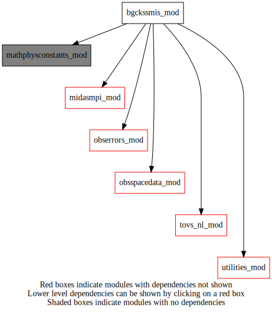

Dependency Diagrams:
 Direct Dependency Diagram¶
Reverse Dependency Diagram¶
Description
MODULE bgckssmis_mod (prefix=’ssbg’ category=’1. High-level functionality’)
- Purpose
Variables for ssmis background check and quality control.
Quick access
- Routines
bennartz(),check_stddev(),check_topo(),cld_filter_fweng(),compute_iwv_101(),copy1dimto2dimintegerarray(),copy1dimto2dimrealarray(),determ_clw(),determ_sea_ice(),determ_tpw(),f16tdr_remapping(),land_ice_mask_ssmis(),ssbg_bgcheckssmis(),ssbg_computessmissurfacetype(),ssbg_grossvaluecheck(),ssbg_init(),ssbg_inovqcssmis(),ssbg_readgeophysicfieldsandinterpolate(),ssbg_satqcssmis(),ssbg_updateobsspaceafterinovqc(),ssbg_updateobsspaceaftersatqc(),ssmi_ta2tb_fweng(),ssmi_ta2tb_fwentz(),ssmis_tb2ta(),wentz_sfctype_ssmis()Needed modules
midasmpi_mod: MODULE midasMpi_mod (prefix=’mmpi’ category=’8. Low-level utilities and constants’)
mathphysconstants_mod: MODULE MathPhysConstants_mod (prefix=’mpc’ category=’8. Low-level utilities and constants’)
utilities_mod: MODULE utilities_mod (prefix=’utl’ category=’8. Low-level utilities and constants’)
obsspacedata_mod: MODULE obsSpaceData_mod (prefix=’obs’ category=’6. High-level data objects’)
tovs_nl_mod: MODULE tovs_nl (prefix=’tvs’ category=’5. Observation operators’)
obserrors_mod: MODULE obsErrors_mod (prefix=’oer’ category=’2. B and R matrices’)Variables
Subroutines and functions
- subroutine bgckssmis_mod/ssbg_init()¶
- Purpose
This subroutine reads the namelist section NAMBGCK for the module.
- Called from
- Call to
- subroutine bgckssmis_mod/ssmis_tb2ta(numobstoprocess, grossrej, ztb, zta)¶
- Purpose
Convert Tbs received from UKMO to Tas, by reversing Ta to Tb spillover correction applied in B. Bell’s pre-processing.
- Arguments
numobstoprocess [integer ,in] :: Number of obs points to process
grossrej (*) [logical ,in] :: Gross rejection indicator
ztb (*) [real ,in] :: Tbs from input BURP file
zta (*) [real ,out] :: Tas after conversion
- Called from
- subroutine bgckssmis_mod/f16tdr_remapping(satid, ssmis_ta, remapped_ssmi_ta)¶
- Purpose
Remap SSMIS imaging channel antenna temperature to SSMI Ta
- Arguments
satid [integer ,in] :: Satellite ID
ssmis_ta (ssbg_maxnumchan) [real ,in] :: SSMIS antenna temperature
remapped_ssmi_ta (ssbg_maxnumchan) [real ,out] :: Remapped SSMI antenna temperature
- Called from
- subroutine bgckssmis_mod/ssmi_ta2tb_fweng(ta, tb)¶
- Purpose
To convert antenna temperature(Ta) to brightness temperature(Tb).
- Arguments
ta (24) [real ,in] :: Antenna temperature
tb (24) [real ,out] :: Brightness temperature
- Called from
- subroutine bgckssmis_mod/ssmi_ta2tb_fwentz(ta, tb)¶
- Purpose
Convert antenna temperatures to brightness temperatures.
- Arguments
ta (*) [real ,in] :: Antenna temperature
tb (*) [real ,out] :: Brightness temperature
- Called from
- subroutine bgckssmis_mod/compute_iwv_101(tb, iwv)¶
- Purpose
Compute integrated water vapor from SSMI brightness temperatures.
- Arguments
tb (24) [real ,in] :: Brightness temperature
iwv [real ,out] :: Integrated water vapor (kg/m**2)
- Called from
- subroutine bgckssmis_mod/determ_tpw(tb, stype, seaice, tpw)¶
- Purpose
To calculate total precipitable water (in mm).
- Arguments
tb (24) [real ,in] :: Brightness temperature
stype [integer ,in] :: Surface type
seaice [real ,in] :: Sea ice coverage
tpw [real ,out] :: Total precipitable water (mm)
- Called from
- subroutine bgckssmis_mod/determ_sea_ice(ocean, ta, stype, seaice, latitude)¶
- Purpose
To calculate sea ice cover (in %).
- Arguments
ocean [integer ,in] :: Ocean surface type index
ta (24) [real ,in] :: Antenna temperature
stype [integer ,in] :: Surface type
seaice [real ,out] :: Sea ice coverage
latitude [real ,in] :: Latitude of observation
- Called from
- subroutine bgckssmis_mod/determ_clw(algoption, ta, tb, stype, clw, iwv, latitude)¶
- Purpose
To calculate cloud liquid water for a single data point (in kg/m**2).
- Arguments
algoption [character ,in] :: Algorithm option (fweng, fwentz or nsun)
ta (24) [real ,in] :: Antenna temperature
tb (24) [real ,in] :: Brightness temperature
stype [integer ,inout] :: Surface type
clw [real ,out] :: Cloud liquid water (in kg/m**2)
iwv [real ,inout] :: Integrated water vapor
latitude [real ,in] :: Latitude of observation
- Called from
- Call to
- subroutine bgckssmis_mod/cld_filter_fweng(numobstoprocess, obstb, algoption, waterobs, grossrej, cloudobs, iwvreject, precipobs, rclw, riwv, isatid, obslatitude, numseaiceobs)¶
- Purpose
Compute the cloud liquid water (CLW) from SSMIS channels using the regression algorithm of Fuzhong Weng and Ninghai Sun. Retrieve CLW path from F16 SSMIS TDR data
- Arguments
numobstoprocess [integer ,in] :: Number of obs points to process
obstb (*) [real ,in] :: Brightness temperature of observations
algoption [character ,in] :: Algorithm option (fweng, fwentz or nsun)
waterobs (*) [logical ,inout] :: Open water identifier for each obs
grossrej (*) [logical ,in] :: Logical array of obs with gross error (obs to reject)
cloudobs (*) [logical ,inout] :: Logical array of obs for which CLW > 0.01 kg/m**2 or with precipitations
iwvreject (*) [logical ,inout] :: Logical array of obs for which IWV > 80 kg/m**2
precipobs (*) [logical ,inout] :: Logical array of obs with precipitations (CLW missing)
rclw (*) [real ,inout] :: Real array of CLW
riwv (*) [real ,inout] :: Real array of integrated water vapor (IWV)
isatid [integer ,in] :: Satellite identifier
obslatitude (*) [real ,in] :: Observation latitudes
numseaiceobs [integer ,inout] :: Number of observations with sea ice
- Called from
- Call to
ssmis_tb2ta(),f16tdr_remapping(),ssmi_ta2tb_fweng(),ssmi_ta2tb_fwentz(),compute_iwv_101(),determ_clw()
- subroutine bgckssmis_mod/copy1dimto2dimrealarray(onedimarray, firstdim, seconddim, twodimarray)¶
- Purpose
copy 1D real array into 2D real array given firstDim and secondDim
- Arguments
onedimarray (firstdim*seconddim) [real ,in] :: 1D real array
firstdim [integer ,in,] :: First dimension
seconddim [integer ,in,] :: Second dimension
twodimarray (firstdim,seconddim) [real ,inout] :: 2D real array
- subroutine bgckssmis_mod/copy1dimto2dimintegerarray(onedimarray, firstdim, seconddim, twodimarray)¶
- Purpose
copy 1D integer array into 2D Integer array given firstDim and secondDim
- Arguments
onedimarray (firstdim*seconddim) [integer ,in] :: 1D integer array
firstdim [integer ,in,] :: First dimension
seconddim [integer ,in,] :: Second dimension
twodimarray (firstdim,seconddim) [integer ,inout] :: 2D integer array
- subroutine bgckssmis_mod/bennartz(ier, numobstoprocess, tb89, tb150, satzenithangle, landseaqualifier, scatl, scatw)¶
- Purpose
Compute the following parameters using 2 AMSU-B channels: - scattering index (over land and ocean). The two channels used are: 89Ghz, 150Ghz.
- Arguments
ier (numobstoprocess) [integer ,out] :: Error return code
numobstoprocess [integer ,in] :: Number of obs points to process
tb89 (*) [real ,in] :: 89Ghz AMSU-B brightness temperature (K)
tb150 (*) [real ,in] :: 150Ghz AMSU-B brightness temperature (K)
satzenithangle (*) [real ,in] :: Satellite zenith angle (deg.)
landseaqualifier (*) [integer ,in] :: Land/sea indicator (0=land; 1=ocean)
scatl (*) [real ,out] :: Scattering index over land
scatw (*) [real ,out] :: Scattering index over water
- Called from
- subroutine bgckssmis_mod/ssbg_readgeophysicfieldsandinterpolate(obslatitude, obslongitude, modelinterpter)¶
- Purpose
Reads geophysical model variable (GZ) and saves for the first time. GZ is geopotential height (GZ at surface = surface height in dam). Then interpolates those variables to observation location.
- Arguments
obslatitude (*) [real ,in] :: Observation latitudes
obslongitude (*) [real ,in] :: Observation longitudes
modelinterpter (*) [real ,out,allocatable] :: Filtered and interpolated topography (in m)
- Called from
- Call to
- subroutine bgckssmis_mod/land_ice_mask_ssmis(numobstoprocess, obslatitude, obslongitude, landseaqualifier, terraintype, waterobs)¶
- Purpose
Determine for each observation point the ice mask value from the binary file copied to the local work directory.
- Arguments
numobstoprocess [integer ,in] :: Number of obs points to process
obslatitude (*) [real ,in] :: Observation latitudes
obslongitude (*) [real ,in] :: Observation longitudes
landseaqualifier (*) [integer ,inout] :: Land/sea indicator (0=land; 1=ocean)
terraintype (*) [integer ,out,allocatable] :: Terrain type qualifier
waterobs (*) [logical ,out,allocatable] :: Open water identifier for each obs
- Called from
- Call to
- subroutine bgckssmis_mod/wentz_sfctype_ssmis(numobstoprocess, obslatitude, obslongitude, landseaqualifier)¶
- Purpose
Determine for each observation point the wentz surface value from the FST file wentz_surf.std.
- Arguments
numobstoprocess [integer ,in] :: Number of obs points to process
obslatitude (*) [real ,in] :: Observation latitudes
obslongitude (*) [real ,in] :: Observation longitudes
landseaqualifier (*) [integer ,out,allocatable] :: Land/sea indicator (0=land; 1=ocean)
- Called from
- Call to
- subroutine bgckssmis_mod/ssbg_computessmissurfacetype(obsspacedata)¶
- Purpose
Compute surface type element and update obsSpaceData.
- Arguments
obsspacedata [struct_obs ,inout] :: ObsSpaceData object
- Called from
- Call to
obs_getheaderindex(),obs_headelem_i(),tvs_isidburpinst(),obs_headelem_r(),wentz_sfctype_ssmis(),obs_headset_i()
- subroutine bgckssmis_mod/ssbg_grossvaluecheck(numobstoprocess, obstb, obstbmin, obstbmax, grossrej)¶
- Purpose
Check obsTb for values that are missing or outside physical limits.
- Arguments
numobstoprocess [integer ,in] :: Number of obs points to process
obstb (*) [real ,in] :: Brightness temperature of observations
obstbmin [real ,in] :: Min(obsTb) threshold for rejection
obstbmax [real ,in] :: Max(obsTb) threshold for rejection
grossrej (*) [logical ,out,allocatable] :: Logical array of obs with gross error (obs to reject)
- Called from
- subroutine bgckssmis_mod/ssbg_satqcssmis(obsspacedata, headerindex, obstoreject)¶
- Purpose
This program is applied as a first stage of processing to SSMIS data after it is received from UK MetOffice and organized into boxes by a program of Jose Garcia. The processing applied in this program includes:
- – interpolate Wentz surface land mask to each obs pt
(nearest neighbour) to define land/sea qualifier (008012)
- – interpolate binary ice mask to each obs pt (nearest
neighbour) to define terrain-type element (013039) where 0 = sea ice and 1 = snow-covered land
- – interpolate model MG and LG fields to a grid surrounding each obs
pt to identify obs that are over open water, far from coast/ice
- – identify those obs for which the UKMO rain marker
is ON (ie. 020029 = 1) indicating poor quality
- – apply a cloud filter to identify those obs in cloudy regions;
write CLW and IWV (over ocean) to output BURP file
- – re-write data to output BURP file while modifying flags
for those obs which are not over open water, or have been identified in rain/cloud areas, or are of poor quality
- – define satellite zenith angle element (007024) and add
this and land/sea qualifier and terrain-type elements to the output file
- Arguments
obsspacedata [struct_obs ,inout] :: ObsSpaceData object
headerindex [integer ,in] :: Current header index
obstoreject (*) [logical ,out,allocatable] :: Observations that will be rejected
- Called from
- Call to
obs_headelem_i(),tvs_isidburpinst(),tvs_mapsat(),tvs_mapinstrum(),utl_abort(),obs_elem_c(),obs_headelem_r(),obs_bodyelem_r(),land_ice_mask_ssmis(),ssbg_grossvaluecheck(),cld_filter_fweng(),bennartz(),obs_headset_i(),obs_numheader()
- subroutine bgckssmis_mod/ssbg_updateobsspaceaftersatqc(obsspacedata, headerindex, obstoreject)¶
- Purpose
Update obspacedata variables (obstTB and obs flags) after QC
- Arguments
obsspacedata [struct_obs ,inout] :: ObsSpaceData object
headerindex [integer ,in] :: Current header index
obstoreject (*) [logical ,in] :: Observations that will be rejected
- Called from
- Call to
obs_headelem_i(),tvs_mapsat(),tvs_mapinstrum(),utl_abort(),obs_bodyelem_r(),obs_bodyelem_i(),obs_headset_i(),obs_bodyset_i()
- subroutine bgckssmis_mod/ssbg_inovqcssmis(obsspacedata, headerindex, flagsinovqc)¶
- Purpose
Identify those observations in SSMIS data that have O-P values greater than a threshold proportional to known standard deviations (computed when the bias correction coefficients were derived). The flags of these observations are adjusted accordingly (ie bit 9 switched ON). Also,
- – flag channels for systematic rejection based on UTIL
value in stats_*_errtot file or because flag bit 6 OFF (uncorrected data)
- – reject sets of AMSU-like channels based on O-P for
a single channel
- – reject selected AMSU-like channels over land when
model surface height exceeds a specified limit (topography check)
- Arguments
obsspacedata [struct_obs ,inout] :: ObsSpaceData object
headerindex [integer ,in] :: Current header index
flagsinovqc (*) [integer ,out,allocatable] :: Flags for assimilation/rejection of obs
- Called from
- Call to
obs_headelem_i(),tvs_isidburpinst(),tvs_mapsat(),tvs_mapinstrum(),utl_abort(),obs_elem_c(),obs_headelem_r(),obs_bodyelem_r(),obs_bodyelem_i(),ssbg_readgeophysicfieldsandinterpolate(),check_stddev(),check_topo()
- subroutine bgckssmis_mod/check_stddev(obschannels, omptb, flagsinovqc, actualnumchannel, numobstoprocess, sensorindex, burpfilesatid, obsflags)¶
- Purpose
Perform quality control on the radiances by analysing the magnitude of the residuals.
- Arguments
obschannels (*) [integer ,in] :: Channel numbers
omptb (*) [real ,in] :: Radiance residuals
flagsinovqc (*) [integer ,out] :: Flags for assimilation/rejection of obs
actualnumchannel [integer ,in] :: Number of channels
numobstoprocess [integer ,in] :: Number of obs points to process
sensorindex [integer ,in] :: Identification number of satellite
burpfilesatid [character ,in] :: Satellite identification in BURP file
obsflags (*) [integer ,in] :: Radiance data flags
- Called from
- subroutine bgckssmis_mod/check_topo(modelinterpter, flagsinovqc, actualnumchannel, numobstoprocess)¶
- Arguments
modelinterpter (*) [real ,in] :: Model surface height (m) for each obs
flagsinovqc (*) [integer ,inout] :: Flags for assimilation/rejection of obs
actualnumchannel [integer ,in] :: Number of channels
numobstoprocess [integer ,in] :: Number of obs points to process
- Called from
- subroutine bgckssmis_mod/ssbg_updateobsspaceafterinovqc(obsspacedata, headerindex, flagsinovqc)¶
- Purpose
Update obspacedata variables (obstTB and obs flags) after QC
- Arguments
obsspacedata [struct_obs ,inout] :: ObsSpaceData object
headerindex [integer ,in] :: Current header index
flagsinovqc (*) [integer ,in] :: Flags for assimilation/rejection of obs
- Called from
- Call to
obs_headelem_i(),tvs_mapsat(),tvs_mapinstrum(),utl_abort(),obs_bodyelem_r(),obs_bodyelem_i(),obs_headset_i(),obs_bodyset_i()
- subroutine bgckssmis_mod/ssbg_bgcheckssmis(obsspacedata)¶
- Purpose
Do the background check for SSMIS data (satQC and inovQC).
- Arguments
obsspacedata [struct_obs ,inout] :: ObsSpaceData object
- Called from
- Call to
utl_tmg_start(),obs_getheaderindex(),obs_headelem_i(),tvs_isidburpinst(),utl_abort(),ssbg_init(),ssbg_satqcssmis(),ssbg_updateobsspaceaftersatqc(),ssbg_inovqcssmis(),ssbg_updateobsspaceafterinovqc(),utl_tmg_stop()
{kind=link}
{kind=link}